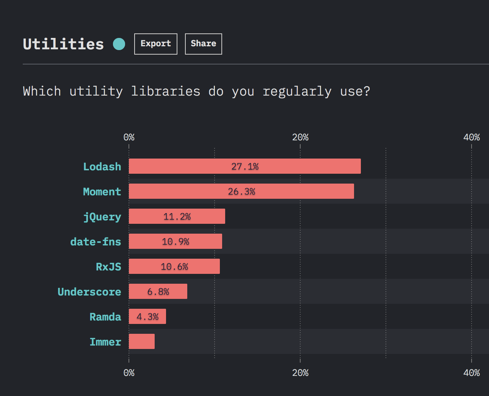

The State of Javascript 2019 Survey
Lodash:
- provides utility functions for common programming tasks using a functional programming paradigm;
- helps programmers write more concise and easier to maintain JavaScript code;
- contains tools to simplify programming with strings, numbers, arrays, functions and objects;
- contributes to better code readability;
- makes your codebase smaller;
- create consistency among development teams;
Lodash builds upon the older Underscore.js library, originally released in 2009.
In 2012 John-David Dalton created a fork of Underscore, named Lo-Dash (now Lodash).
Installation
1. Using CDN:
<script src="https://cdn.jsdelivr.net/npm/lodash@4.17.21/lodash.min.js"></script>
2. Using npm:
$ npm i -g npm
$ npm i --save lodash
3. In Node.js:
// Load the full build.
var _ = require('lodash');
// Load the core build.
var _ = require('lodash/core');
// Load the FP build for immutable auto-curried methods.
var fp = require('lodash/fp');
// Load method categories.
var array = require('lodash/array');
var object = require('lodash/fp/object');
You can choose to load the full build or load only the modules you need.
Library Contents
- The Lodash library is broken up into areas:
- Array
- Collection
- Date
- Function
- Lang
- Math
- Number
- Object
- Sec
- String
- Util
Adding up all the numbers of an array
Your code without Lodash:
const arr = [1, 2, 3, 4, 5];
let sum = 0;
for (let i = 0; i < arr.length; i++) {
sum += arr[i];
}
console.log(sum); // 15
Your code using Lodash:
const arr = [1, 2, 3, 4, 5];
console.log(_.sum(arr)); // 15
Deep object copying
Your code without Lodash:
function deepCopy(objA, objB) {
for (let key in objB) {
if (typeof (objB[key]) != "object") {
objA[key] = objB[key];
} else {
objA[key] = {};
deepCopy(objA[key], objB[key]);
}
}
}
deepCopy(objA, objB);
Your code using Lodash:
let objA = _.cloneDeep(objB);
Your code without Lodash:
Your code using Lodash:
const movies = [
{ title: 'Interstellar', year: 2014 },
{ title: 'The Dark Knight', year: 2008 },
{ title: 'Prestige', year: 2006 },
{ title: 'Inception', year: 2010 },
{ title: 'Memento', year: 2000 },
{ title: 'Batman Begins', year: 2005 },
{ title: 'Tenet', year: 2020 },
];
const result = _(movies).take(3).value();
console.log(result);
OUTPUT:
[
{ title: 'Interstellar', year: 2014 },
{ title: 'The Dark Knight', year: 2008 },
{ title: 'Prestige', year: 2006 },
]
const movies = [
{ title: 'Interstellar', year: 2014 },
{ title: 'The Dark Knight', year: 2008 },
{ title: 'Prestige', year: 2006 },
{ title: 'Inception', year: 2010 },
{ title: 'Memento', year: 2000 },
{ title: 'Batman Begins', year: 2005 },
{ title: 'Tenet', year: 2020 },
];
const result = _(movies).take(3).sortBy('year').value();
console.log(result);
OUTPUT:
[
{ title: 'Prestige', year: 2006 },
{ title: 'The Dark Knight', year: 2008 },
{ title: 'Interstellar', year: 2014 },
]
const movies = [
{ title: 'Interstellar', year: 2014 },
{ title: 'The Dark Knight', year: 2008 },
{ title: 'Prestige', year: 2006 },
{ title: 'Inception', year: 2010 },
{ title: 'Memento', year: 2000 },
{ title: 'Batman Begins', year: 2005 },
{ title: 'Tenet', year: 2020 },
];
const result = _(movies).take(3).map('title').sort().value();
console.log(result);
OUTPUT:
['Interstellar', 'Prestige', 'The Dark Knight']
_.minBy()
const movie = _.minBy(movies, 'year');
console.log(movie);
OUTPUT:
{title: 'Memento', year: 2000}
_.maxBy()
const movie = _.maxBy(movies, 'year');
console.log(movie);
OUTPUT:
{title: 'Tenet', year: 2020}
Highlights
- Lodash offers extremely useful methods and functions.
- Lodash makes web development easier.
- Lodash saves you time.